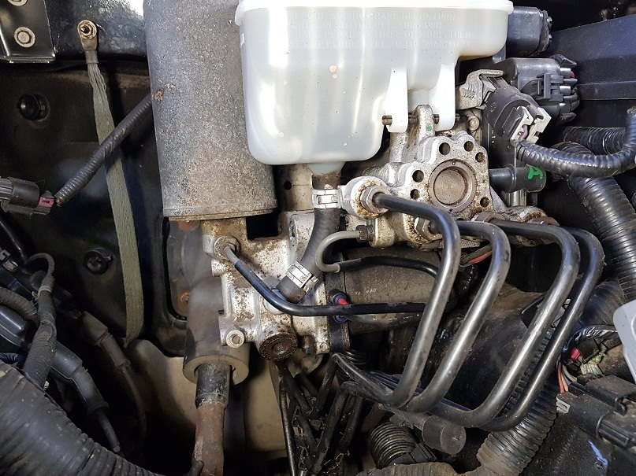
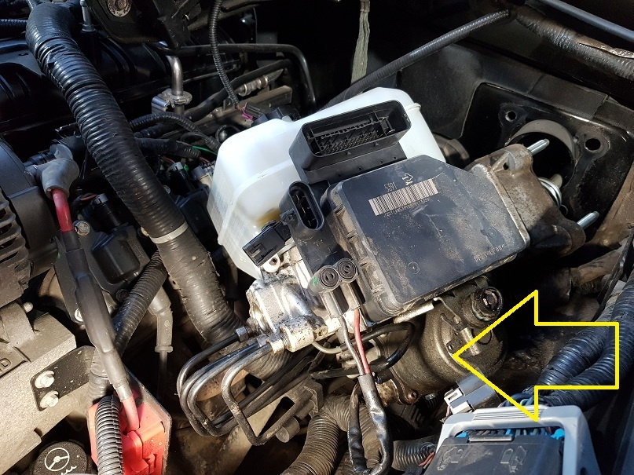
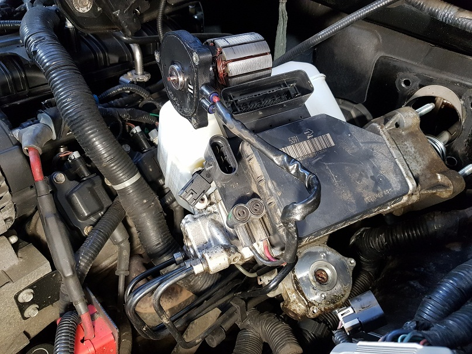
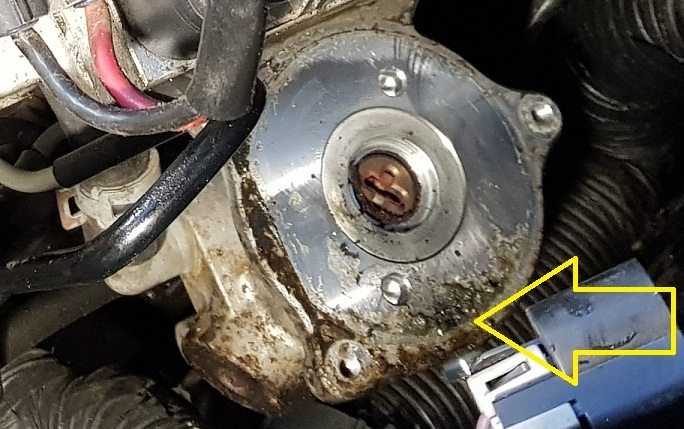
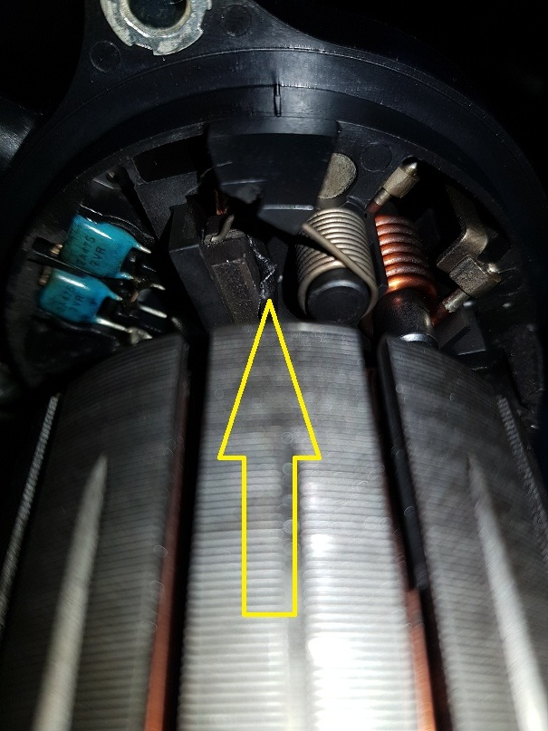
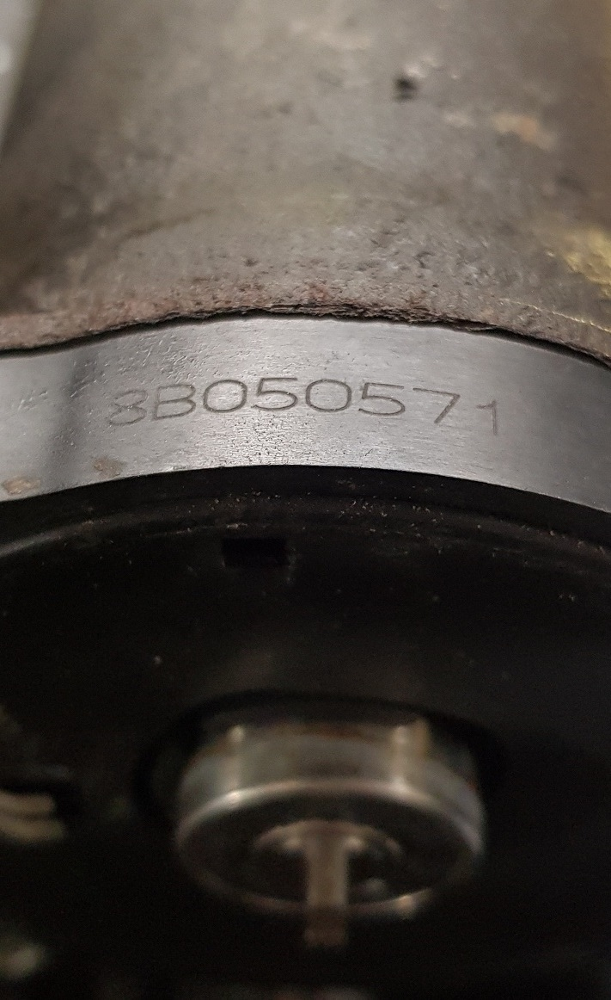

10.04.2019
К нам обратился владелец авто Hummer H2 2008г. 6,2л.
 Причина обращения - загорелись лампы ABS , ESP и педаль тормоза стала очень тугая...
Причина обращения - загорелись лампы ABS , ESP и педаль тормоза стала очень тугая...
Компьютерная диагностика направила искать проблему в гидронасос высокого давления тормозной жидкости , а точнее отсутствие давления .

С первого-же взгляда понятно , что присутствуют подтёки тормозной жидкости , но уровень жидкости в норме . ( Причину течи тормозухи не искали ! Это работа других специалистов ) . После контрольных проверок ( тернист и труден путь диагноста ) выяснилось , что при подаче напряжения на электромотор насоса гидроусилителя тормозов - он не вращается.
Сняв электродвигатель обнаружили , что внутри всё в тормозухе...
А коррозия алюминиевой поверхности соприкосновения со щёточным узлом лишила его герметичности ...

В свою очередь , щётки , при работе электромотора в среде тормозной жидкости перегрелись и подплавив пластиковый корпус щёточного узла зависли ...
Чистка и разработка щёточного узла вернула к жизни электромотор , на этом и остановились ... Так как владелец принял решение поменять весь гидро-электро агрегат всборе.P.S. На всякий случай номер щёточного узла на фото :
